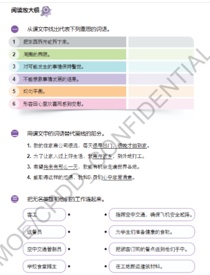

教师教学流程与参考答案
中一高级华文 · 单元六 · 生活空间 · 1—2课时
教学主线
辨认工作 → 按段读懂工作与感受 → 完成课本原题 → 自主概括特点 → 解释缺少这些工作的影响。
重点：提取直接信息，区分工作、要求与愿望，用原文支持人物特点，说明观点与例子的关系。
一课时50分钟：导入3分钟；四段图文与原题24分钟；人物特点7分钟；必做开放回应12分钟；订正与收藏4分钟。
两课时各50分钟：第一课：导入5分钟、第一至二段20分钟、第三至四段20分钟、整理5分钟。第二课：原题订正8分钟、人物自主写答12分钟、开放题讨论与独立写答20分钟、反馈与词语整理10分钟。不追加新短文或延迟小测。
教师资料与下载
投影直接使用本课网页，原文与问题可按需讲解；没有PPT、替代幻灯课件或额外PDF课件。
第一段 · 客工
一、从课文中找出代表下列意思的词语。
二、用课文中的词语替代画线的部分。
三、把无名英雄和他们的工作连起来。
课本《阅读放大镜》原题一、二、三，按段拆分；口头追问依据教参2.2改编。
展开参考答案与讲评
原题一①：拆卸；原题一⑥：欣慰；原题二①：早出晚归；原题二②：离乡背井。原题三：客工 → 在工地搬运建筑材料。
原题一、二检查词语的语境义；原题三提取直接信息，不需要硬加推断。
易错：不要把其他职业的工作配给本段人物；词语替换不能只找字面相近的词。
分层提示：先回看左边本段；把词语的意思和人物实际工作分开核对。 → 注意本段红色词语及工作动作。替换词必须保留画线部分的意思。
这份工作辛苦，客工为什么仍感到欣慰？
因为他凭自己的劳动改善了家人的生活。原文已经说明原因，不需要另作推断。
漫画里出现的家人、视频通话，能直接当作课文证据吗？
不能。漫画是帮助理解的情境，取证应回到原文。
第二段 · 送餐员
二、用课文中的词语替代画线的部分。
三、把无名英雄和他们的工作连起来。
课本《阅读放大镜》原题一、二、三，按段拆分；口头追问依据教参2.2改编。
展开参考答案与讲评
原题二③：有朝一日。原题三：送餐员 → 把顾客订购的餐点送到他们手中。
原题一、二检查词语的语境义；原题三提取直接信息，不需要硬加推断。
易错：不要把其他职业的工作配给本段人物；词语替换不能只找字面相近的词。
分层提示：先回看左边本段；把词语的意思和人物实际工作分开核对。 → 注意本段红色词语及工作动作。替换词必须保留画线部分的意思。
送餐员对自己的工作有哪三项要求？
接的订单要多、餐点送得要快、服务要好。三项都要照顾到。
他的梦想实现了吗？
原文说“希望”“有朝一日”，只是愿望，没有说已经实现，也没有交代梦想的具体内容。
第三段 · 空中交通管制员
一、从课文中找出代表下列意思的词语。
三、把无名英雄和他们的工作连起来。
课本《阅读放大镜》原题一、二、三，按段拆分；口头追问依据教参2.2改编。
展开参考答案与讲评
原题一②：范围；原题一③：警惕；原题一④：不堪设想。原题三：空中交通管制员 → 指挥空中交通，确保飞机安全起降。
原题一、二检查词语的语境义；原题三提取直接信息，不需要硬加推断。
易错：不要把其他职业的工作配给本段人物；词语替换不能只找字面相近的词。
分层提示：先回看左边本段；把词语的意思和人物实际工作分开核对。 → 注意本段红色词语及工作动作。替换词必须保留画线部分的意思。
为什么空中交通管制员必须时刻保持警惕？
一旦失误，后果不堪设想；他的工作关系到飞机安全。
“成就感”与“挣钱多”是同一件事吗？
不是。这里是把工作做好所得到的满足，原文没有提供收入资料。
第四段 · 学校食堂摊主
一、从课文中找出代表下列意思的词语。
二、用课文中的词语替代画线的部分。
三、把无名英雄和他们的工作连起来。
课本《阅读放大镜》原题一、二、三，按段拆分；口头追问依据教参2.2改编。
展开参考答案与讲评
原题一⑤：均衡；原题二④：心满意足。原题三：学校食堂摊主 → 为学生们准备健康的食物。
原题一、二检查词语的语境义；原题三提取直接信息，不需要硬加推断。
易错：不要把其他职业的工作配给本段人物；词语替换不能只找字面相近的词。
分层提示：先回看左边本段；把词语的意思和人物实际工作分开核对。 → 注意本段红色词语及工作动作。替换词必须保留画线部分的意思。
摊主怎样让学生吃得健康？
食物营养要均衡，脂肪和盐分不能过量。不是完全不要脂肪或盐分。
摊主什么时候会心满意足？
只要学生吃得好、吃得健康，摊主就心满意足。原文没有交代性别。
人物特点 · 自己概括
选择文中的一位无名英雄，说说他或她是一个怎样的人。请结合课文内容说明。
教师补充题：自主概括人物特点。
展开参考答案与讲评
示例：学校食堂摊主关心学生的健康。摊主要求食物营养均衡，脂肪和盐分不能过量；只要学生吃得好、吃得健康，摊主就心满意足。这说明摊主关注学生的饮食需要，并把学生的健康放在心上。
特点属于有证据支持的概括。主观题由教师按意思核对，系统只保存与提供参考。
易错：只写“很好”“伟大”太笼统；不能因工资、国籍、性别或漫画中的新增情节作判断。
分层提示：先选一个人物，回看他做什么、对工作有什么要求。 → 特点要与具体行为对应；不要把“忙碌”直接当作“无私”。
开放回应 · 为什么不可缺少
如果没有这些无名英雄，你觉得我们的生活会有什么不同？
教参2.3讨论原题；作答框架为教学支架。
展开参考答案与讲评
示例：如果没有学校食堂摊主，学生在学校吃到合适午餐会更不方便。因为摊主不仅准备食物，还注意营养是否均衡。例如课文中的摊主清晨五点就开始工作，并控制食物的脂肪和盐分。少了这些准备，学校就需要另找合适的供餐安排。这说明看似平凡的工作支持着我们的日常生活，值得我们尊重。
开放题没有唯一立场。教师核对理由与例子的关系，系统不以字数或关键词判断对错。
易错：只说“没有他们就不好，因为他们很好”属于循环理由；不把所有职业写成同一工作，也不编造个人经历。
分层提示：不要只说“不方便”。选一种生活需要：住、吃或安全出行。 → 把“具体工作 → 少了它的影响 → 我们的生活”连起来，避免只重复看法。
来源与教学边界
全文依据两张教材截图，四段按人物顺序编号；《阅读放大镜》三道大题共14个子项均保留，按段拆分，原题号不变；教参2.3开放题原问法保留。人物特点题明确标为教师补充。
漫画保留上传原图。部分具体情境为插画补充，例如家人视频、核对订单等，不能用作课文事实证据。第四页末格是全文人物合图，不算新增第五段。
教参中未能核清的拓展活动细字不转写为教材原题。本课不安排额外课后练习。
查看课本原题页

记录与使用
学生答案、首次提交、订正和阅读位置保存在当前设备与浏览器，可在“检查”导出。个人词语本沿用平台共享收藏，可按年级、单元、课文筛选和用闪卡复习。未知词仍能收藏，释义需补充；不表示已接入AI释义。
清除浏览器数据前先导出。跨设备不会自动同步；本课没有新增自动收件或成绩上传。主观题须教师覆核。重置本课保留词语本，投影作答与学生作答分开。
本页公开含答案，请向学生分享学生入口。